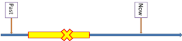
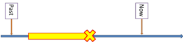

Tense and aspect
 |
What is tense? |
Tense refers to the way a verb may change to show its setting in time.
For example:
She travels to London
shows that we are talking about a repeated habit of hers.
The -s ending on the verb tells us that this is a present
simple tense.
John escaped
shows that we are talking about the past and that is signalled
by the -d ending on the verb. It is a past simple
tense.
The train will arrive
at 6.09
refers to the future but the verb itself does not, in English,
change so some will say it is not a proper tense at all. What
English does is to insert the auxiliary verb, will, before the main
verb to signal the future. Many languages will change the verb
itself.
 |
What is aspect? |
Aspect, by contrast, does not show us the time of an event but
shows us how we see the event or how we see the event is related to other events.
There are two main types of aspect in English that you need to know
about now (although there are a number of others which you will need
to learn about later).
- The Perfect Aspect
Relates two times to each other.
For example:
She has travelled to London
shows that we are talking about a past which has immediate reference for the present. The assumption is that she is in London now or that her experience of travelling there is relevant to now. It is called the present perfect because we see the event has significant for the present. To do that, in English, we insert the auxiliary verb, has.
John had escaped
shows that we are talking about the past but that we are relating it to something later in the past (such as ... but was caught at the station) and this is signalled by the use of the auxiliary verb, had. It is called a past perfect tense in English because it relates together two events in the past.
The train will have arrived by 6.09
refers to the future but the the insertion of the auxiliary verb, have, shows that we are relating the arrival of the train with another future event that comes before it. - The Progressive Aspect
Indicates how the speaker / writer sees the event in terms of duration.
For example:
She is learning French
does not necessarily mean that she is in a classroom or studying a dictionary now. It shows that the learning is progressive in the background of all else that is happening.
However,
She was reading when I came in
shows that the action of reading started before I came in and (possibly) continued afterwards. (I may have interrupted her or she may have continued reading and ignored me.)
They will be having dinner in Margate
refers to the fact that I imagine they will take some time to eat (so it's a progressive event) and that it is possible that they will be interrupted during the event.
 |
Naming tenses and aspects |
What follows applies to English. Because tense forms and their meanings vary very considerably across languages, it is not always possible to translate the names of tenses accurately. The examples of the tense form are in black bold type.
- Simple tenses
- Perfect aspects with these tenses:
- Progressive aspects with these tenses (sometimes called continuous aspects although there is a technical difference):
It is possible to combine aspects so we allow, in English, for
example:
The had
been studying
They will have been
studying
and so on. The names of these tenses are logical. The
first is the past perfect progressive and the second is the future
perfect progressive.
Here is a chart of all the tenses in English. You can click
on the chart for a link to a guide to that form. You do not
need to know all about all the tenses before you start your CELTA
course but it will help a lot if you are familiar with the names of
the forms.
If you need to teach a particular tense form, this is a good place
to begin a little research.

Implications for teaching |
English tense structures are quite complicated, often more so than the structures in your learners' first languages, so it is very important that you know what you are talking about before you try to teach tense forms and patterns.
- Know your subject.
Before daring to teach a tense form, make sure you do some research. This site is a good place to start and you can use the table above to locate the forms that concern you. - Be aware of differences between languages.
Many languages do not chop time up or view it in any way similarly to the way English speakers view time. Some, for example, do not have any way of distinguishing aspect from tense so
I arrived
and
I have arrived
are functionally identical.
The English concept of a relational aspect is hard for learners with these language backgrounds to grasp.
Other languages do not have anything like an equivalent of progressive forms so there is no obvious difference in these languages between a translation of
She was speaking
and
She spoke
and, again, the concepts will be hard for some learners to understand. - Use time lines to make things clear.
There is a guide to using time lines on this site, linked below, which will help you understand what they are and how to construct them. A visual image of the relationships that perfect and progressive aspects imply is particularly helpful.
Here's an example which is intended to make a difference between:
She was cycling to work when she had the idea
and
She was cycling to work when she had the accident


In the first line the cycling continues (the yellow line) and having the idea occurs in the middle of that (the red cross).
In the second line, the red cross denotes the accident and the cycling clearly did not continue. - Present tense forms in context.
If you present a tense or aspect form, you need to be very clear about the concept it represents.
For example:
I have seen the film
in English, implies that the film is part of my present understanding of the world and I am prepared to talk about it.
In other languages, however, such as German, French or Dutch, the form may simply refer to a past event which is finished and has no present reference. A better translation from those languages may often be:
I saw the film
By the same token, the meaning of something like:
I will have finished
is not possible to see unless the event is set in the context of other future events (such as in a narrative). - Do not assume that accuracy is the same as
understanding.
If a learner produces something like:
He is being difficult
it may only be evidence that he or she can form the tense properly. The learner may mean either:
He is difficult
or
He persists in being difficult
and you don't know if the context is not clear.
This has been a short and severely edited guide to a complex set
of topics and ideas. It is enough to get you started but you
will need to know more very soon.
From here, you can look at
some other issues with tense and aspect. Use
this menu:
| tense and aspect | tenses | verbs | time lines |